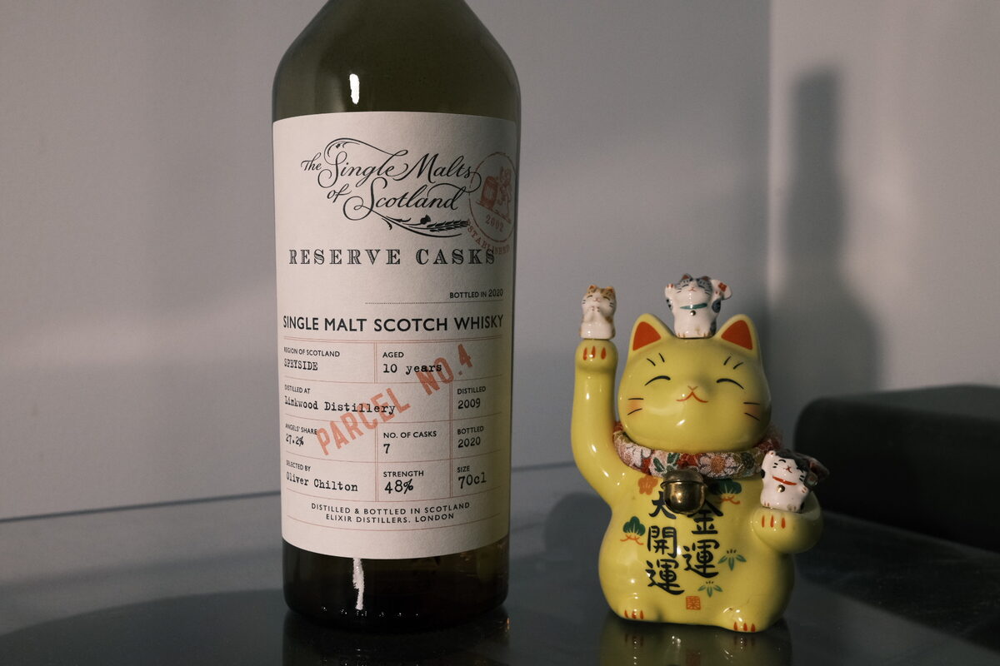

Linkwood 2009 Single Malts of Scotland 10 years 48% (seven cask vatting)
Another Linkwood. From Elixir Distillers.
Colour Straw. Likely refill hogsheads for most of the vatting.
Nose Floral and perfumed: reminds me a bit of an Armagnac. Honey, mead. Acidity: lemons and limes, white wine. Lemon peel. Lychee and unripe berries. Bready malt. A little herbal and woody. Green apples stewing away for a pie.
Palate Acidic and floral. The Octomore of flowers. Buttery and thick, like a croissant. Tangerines, lemons, and limes, particularly the peels. Oily. Savoury and spicy malt to complement the flowers. It’s like some citrus jam on croissants absolutely covered in flowers. Drinks a little hotter than 48%. More malt, cream. Tea-like: earl grey with sugar. Eucalyptus.
Finish Chilli peppers, more flowers and croissants. Textured milk and white chocolate. Intensely long and warming.
Comments A lovely floral dram. I’m really digging the croissants mixed with fresh acidity. Delicious everyday whisky. 86/100.

Posted by Dominic on 28 Apr 2021